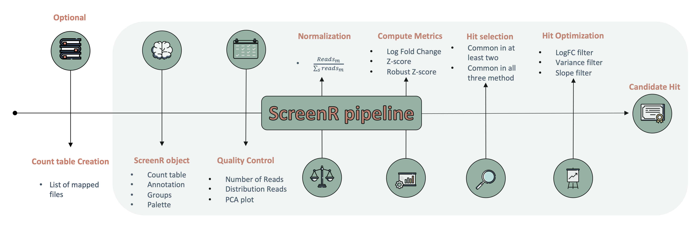

ScreenR is an easy and effective package to perform hits identification in loss of function High Throughput Biological Screening performed with shRNAs library. ScreenR combines the power of software like edgeR with the simplicity of the Tidyverse metapackage. ScreenR executes a pipeline able to find candidate hits from barcode counts data and integrates a wide range of visualization for each step of the analysis
Installation instructions
Get the latest stable R release from CRAN note that you need to have R 4.3 or greater to use ScreenR. Then install ScreenR from Bioconductor using the following code:
if (!requireNamespace("BiocManager", quietly = TRUE)) {
install.packages("BiocManager")
}
BiocManager::install("ScreenR")And the development version from GitHub with:
devtools::install_github("EmanuelSoda/ScreenR")ScreenR overall workflow

Please note that the ScreenR was only made possible thanks to many other R and bioinformatics software authors, which are cited either in the vignettes and/or the paper(s) describing this package.
Citation
Below is the citation output from using citation('ScreenR') in R. Please run this yourself to check for any updates on how to cite ScreenR.
print(citation('ScreenR'))
#>
#> To cite package 'ScreenR' in publications use:
#>
#> Soda E, Ceccacci E (2022). _ScreenR: Package to Perform High
#> Throughput Biological Screening_. R package version 0.99.53,
#> <https://emanuelsoda.github.io/ScreenR/>.
#>
#> A BibTeX entry for LaTeX users is
#>
#> @Manual{,
#> title = {ScreenR: Package to Perform High Throughput Biological Screening},
#> author = {Emanuel Michele Soda and Elena Ceccacci},
#> year = {2022},
#> note = {R package version 0.99.53},
#> url = {https://emanuelsoda.github.io/ScreenR/},
#> }Code of Conduct
Please note that the ScreenR project is released with a Contributor Code of Conduct. By contributing to this project, you agree to abide by its terms.
Development tools
- Continuous code testing is possible thanks to GitHub actions through usethis, remotes, and rcmdcheck customized to use Bioconductor’s docker containers and BiocCheck.
- Code coverage assessment is possible thanks to codecov and covr.
- The documentation website is automatically updated thanks to pkgdown.
- The code is styled automatically thanks to styler.
- The documentation is formatted thanks to devtools and roxygen2.
For more details, check the dev directory.
This package was developed using biocthis.